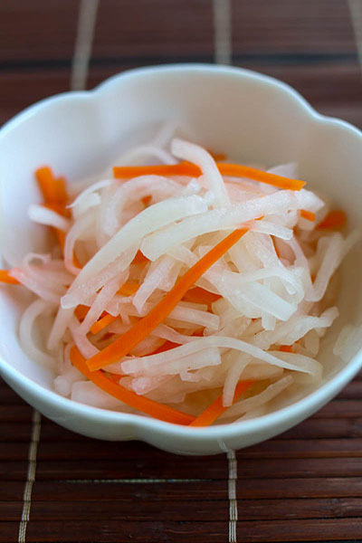

Sola's Favorite Sidedish!
Namasu, The slightly marinated Daikōn Root and Carrot in Rice Vinegar
For my pickled food lovers: the Japanese Vinegar Salads.

Ingredients :
- 4 inch - Daikōn Root
- 2 inch - Carrot
- 1 tsp - Salt
Seasoning:
- 1 1/2 Tbsp - Sugar
- 2 Tbsp - Rice Vinegar
- 1 Tbsp - Water
- 1/4 tsp - Salt
Directions :
- Seperate the whole ingredients from the seasoning ingredients
- Peel the skin off the Daikon and the Carrot
- Cut the Daikon Root and Carrot in half
- Cut the roots in slabs of 1/8 of an inch
- And continue to cut the 1/8 in Slabs ( with 3mm thickness) into strips of 1/8 inches (3mm thickness)
- Move the Daikon and Carrot stripes into a bowl
- Gently massage the daikon and carrots and add pinches of salt, for 5 - 10 minutes
- Once throughly massaged gently squeeze the excess water from the roots
- In another bowl, mix all the seasoning ingredience and whisk well together
- Pour the seasoning into the daikon and carrot strips
- Slightly ferment in the refrigerator for 30 to 45 min
** Some prefer to Marinate Over Night and Ready to Eat in the Morning!! **
??slabs?? and ??strips?? and what do they look like?Step-by-step Directions with pictures?!How to make NAMASU!